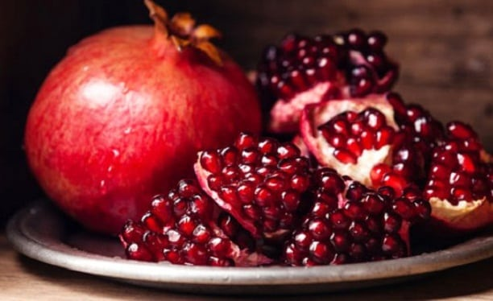

TARIM ÜRÜNLERİ
 |
COĞRAFİ İŞARETLİ ÜRÜNLERİ
|  |
MEŞHUR ÜRÜNLERİ
YETİŞTİRİLEN BUĞDAY TÜRLERİ
|
Panda’s – Ekmeklik Çukurova, Ege, Marmara ve Karadeniz bölgelerine tavsiye edilir. |
||
|
Yüreğir 89 – Ekmeklik Ege ve Akdeniz sahil kuşağına önerilmektedir. |
||
|
Karakılçık Buğdayı – Bulgurluk- Makarnalık Ege, Doğu Anadolu |
||
|
BASRİ BEY-95 – Ekmeklik Ege Bölgesi ve sahil kuşağına tavsiye edilmektedir. |
||
|
Meta 2002 – Ekmeklik Başta ege bölgesi olmak üzere yazlık buğday ekilen tüm bölgeler için uygundur. |
||
|
Kayra – Ekmeklik Başta Ege bölgesi olmak üzere, yazlık buğday ekilen tüm bölgelere önerilmektedir. |
ÜRETİLEN PEYNİR TÜRLERİ
Muğla Fethiye Gevye Yörük Peyniri
Ege Bölgesi'nde Yetişen Ot Türlerini Görmek İçin Tıklayınız